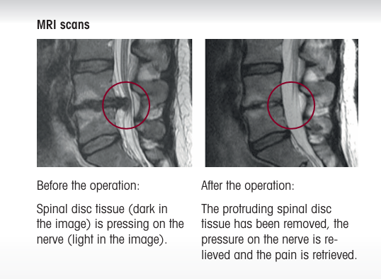
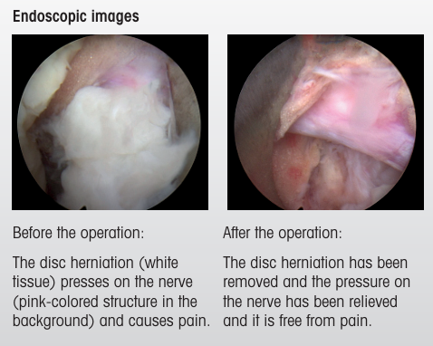

Back or leg pain controlling your life? There's a keyhole way to treat it.
Full-endoscopic spine surgery treats many slip-disc and nerve-compression problems through a single cut about the size of your fingertip — often as a day-care procedure, so you can get back to your life sooner.
Book a Call for Consultation Already have an MRI? Send it for a specialist opinion.
Performed by experienced spine specialists using RIWO Spine 4K endoscopic technology — from Richard Wolf, Germany.
When your back stops you from being yourself
Back pain is one of the most common health problems in India — and for many people, it isn't "just back pain." When a spinal disc bulges or wears down, it can press on a nearby nerve. That pressure is what sends pain, numbness or a burning, shooting feeling down the leg or arm — the kind that makes it hard to sit through a meal, sleep through the night, climb stairs, or do a full day's work.
Most back pain settles with rest, medication and physiotherapy, and it should always be tried first. But when the pain keeps coming back, or the weakness and numbness don't improve, it's worth understanding what else is possible — before assuming a big open surgery is the only option left.
What is full-endoscopic spine surgery?
It's a way of operating on the spine through a single, tiny opening — about one centimetre wide — instead of a long cut.
The surgeon passes a thin telescope-like instrument, called an endoscope, gently between the muscles to reach the exact spot causing trouble. A high-definition camera at its tip sends a bright, magnified picture to a screen, so the surgeon can see the nerve and the problem clearly and work with great precision. Through the same narrow channel, fine instruments remove the bulging disc tissue or bony pressure that's squeezing the nerve.
Because the instrument slips between the muscles rather than cutting through them, the surrounding tissue is largely left undisturbed. When the work is done and the instrument is removed, the muscles simply settle back into place.
One small opening, roughly 1 cm. Many patients go home the same day.
Could it help your spine problem?
Endoscopic techniques can be used, in suitable cases, for several common spinal conditions where a nerve is being compressed. Your symptoms often hint at what's going on — but only a scan and a specialist can confirm it.
-
Slipped (herniated) disc
When the soft cushion between two vertebrae bulges or tears and presses on a nerve. Often felt as sharp pain shooting down one leg (sciatica) or arm.
-
Spinal stenosis
When the spinal canal narrows and crowds the nerves inside. Typically causes back or leg pain and heaviness that worsens with walking and eases when you sit or rest.
-
Foraminal stenosis
When the small side-openings where nerves exit the spine narrow down. Brings shooting pain, tingling or weakness along the path of that nerve.
-
Radiculopathy
A pinched nerve root, often from a disc bulge or bone spur, causing radiating pain, numbness or weakness in an arm or leg.
-
Spondylosis
General age-related wear of the discs and joints of the spine, leading to stiffness, a dull ache and reduced flexibility.
-
Spondylolisthesis
When one vertebra slips slightly forward over the one below it, causing lower-back pain, stiffness and sometimes nerve symptoms.

Not sure which one is yours? A specialist can read your MRI and tell you. → Book a Call for Consultation
Why a keyhole approach changes the experience
The goal of any spine surgery is to take the pressure off the nerve. Endoscopic surgery aims to do exactly that — while disturbing as little of the healthy body as possible. For suitably selected patients, that smaller footprint is what makes the difference, both during the operation and in the weeks after.
-
A 1 cm opening, not a long cut
The entire procedure is done through a single keyhole-sized incision.
-
Often a day-care procedure
Many patients are able to go home the same day, rather than facing a long hospital stay.
-
Muscles are spared
Instruments pass between the muscles instead of cutting through them, so the body has far less to recover from.
-
Less blood loss
The small, precise access means minimal bleeding during surgery.
-
Less pain afterwards
With less tissue disturbed, post-operative pain is usually lower.
-
Barely-there scar
A 1 cm incision leaves a minimal mark instead of a long scar.
-
Your spine's support is protected
The ligaments, muscles and bone that keep your spine stable are largely preserved.
-
Back on your feet sooner
Most people can return to normal daily activity within a few weeks, far faster than after traditional open surgery.
Minimally invasive doesn't mean a compromise. In appropriate cases, it relieves the nerve pressure just as effectively — with less trauma to everything around it.
How it compares to traditional open surgery
| Full-endoscopic surgery | Traditional open surgery | |
|---|---|---|
| Incision | ~1 cm keyhole | Longer cut |
| Muscle | Moved aside, not cut | Often cut to reach the spine |
| Blood loss | Minimal | Higher |
| Hospital stay | Often day-care / very short | Usually longer |
| Scarring | Minimal | More noticeable |
| Return to activity | Typically a few weeks | Generally longer recovery |
Recovery varies from person to person and depends on your condition and overall health. Your specialist will explain what to realistically expect in your case.
What the surgery actually does
The aim is simple: remove what is pressing on the nerve, so the pain has a reason to stop.


What recovery usually looks like
Because so little of the body is disturbed, recovery is often quicker and gentler than people expect.
- Many patients walk on the same day and go home as a day-care case.
- A light support belt may be advised for the first few weeks.
- A simple, guided physiotherapy plan helps rebuild strength — especially if the muscles had become weak.
- Most people return to their normal routine, work and family life within roughly four to six weeks, depending on their condition and the nature of their job.
Your specialist will give you a recovery plan suited to you — there's no one-size-fits-all.
Honestly — is endoscopic surgery right for everyone?
No. And any clinic that tells you otherwise isn't being straight with you.
Endoscopic spine surgery is an excellent option for carefully selected patients — usually those with ongoing nerve-compression symptoms that haven't settled with rest, medication and physiotherapy. Whether it suits you depends on your scans, your specific condition and your overall health.
That's exactly what a consultation is for. A spine specialist will review your MRI and symptoms and tell you honestly whether you're a candidate — and if conservative care is still the better path for now, they'll tell you that too.
Precision starts with what the surgeon can see
In keyhole surgery, a clear view is everything. The procedures are performed using the RIWO Spine endoscopic system with 4K high-definition imaging, made by Richard Wolf, Germany — a name trusted in surgical visualisation worldwide.
Sharper, magnified imaging lets the surgeon see the finest structures clearly, judge depth accurately, and work with confidence around delicate nerves. Better vision means safer, more precise surgery.
Frequently asked questions
Will I be put fully to sleep?
That depends on the procedure and your specialist's assessment. Some endoscopic spine surgeries can be done under regional or local anaesthesia. Your doctor will discuss the safest option for you.
How big is the cut, really?
About one centimetre — roughly the width of a fingertip. It usually leaves only a tiny mark.
Will I have to stay in hospital for days?
Often no. Many endoscopic cases are managed as day-care, meaning you can go home the same day. Your specialist will confirm based on your situation.
How soon can I walk and get back to work?
Many patients walk the same day. A return to normal activity is commonly possible within about four to six weeks, depending on your condition and your kind of work.
Is it safe?
All surgery carries some risk, but the minimally invasive approach is designed to reduce trauma to the body. Modern endoscopic technology and an experienced specialist help keep risks low. Your doctor will explain the specifics for your case.
How is this different from the open surgery my doctor mentioned?
The main differences are the size of the incision, whether muscles are cut or simply moved aside, blood loss, hospital stay and recovery time — all of which are usually smaller with the endoscopic approach, in suitable cases.
I already have an MRI. Can you tell me if I'm a candidate?
Yes — that's the quickest way to get a clear answer. Share your MRI through the consultation request and a specialist can review it.
Take the first step toward a life with less pain.
You don't have to keep living around your back. A short consultation will tell you exactly where you stand — what's causing your pain, whether endoscopic surgery can help, and what your real options are. No pressure, just clarity.
Request received.
Our team will call you within 24 hours to schedule your consultation. If you uploaded an MRI, a specialist will review it before the call.
In the meantime, you're welcome to message us on WhatsApp: [your WhatsApp number].